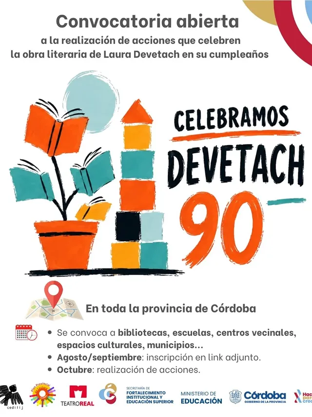
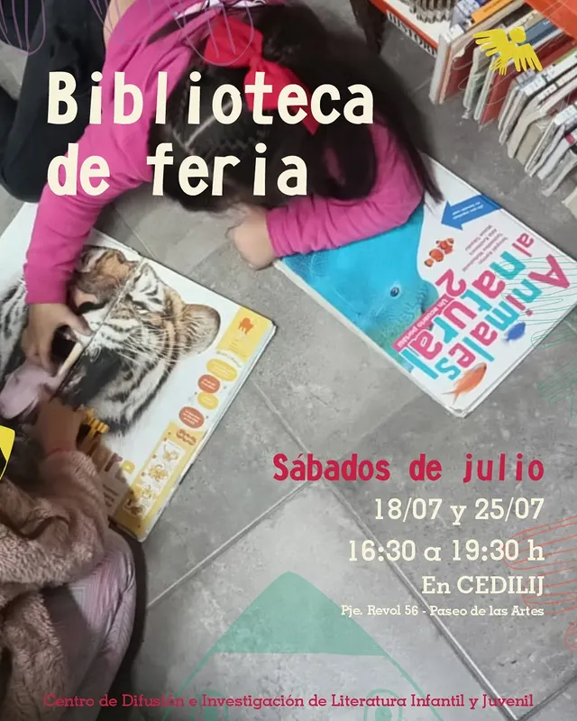
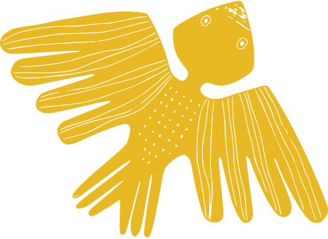

Misión
Promover la formación de infancias y jóvenes lectores desde la literatura, haciendo realidad en cada persona el derecho a la lectura y a la cultura en todas sus representaciones.
Somos una organización cordobesa sin fines de lucro que promueve, investiga y difunde la literatura para infancias y jóvenes, construyendo comunidad alrededor de la lectura y la palabra.
Promover la formación de infancias y jóvenes lectores desde la literatura, haciendo realidad en cada persona el derecho a la lectura y a la cultura en todas sus representaciones.
Ser un referente regional en literatura infantil y juvenil, reconocido por su compromiso con el derecho a leer de las infancias y juventudes.[Revisar]
Actividades, talleres y noticias recientes de CEDILIJ.

Estamos probando la carga de novedades en la nueva Web del cedilij.

La convocatoria invita a escuelas, centros culturales, bibliotecas, etc. a organizar actividades.

Cada quince días, la biblioteca abre también los sábados. ¡Acercate!

Seguinos en nuestras redes para no perderte nada.